Bespoke SVG
Continuous-line leaf form with two counter-rotating dashed ellipses and concentric pulses. Appears in the hero card and as ambient bg on marketing feature tiles. Animates via animate-orbit-slow / fast.
animate-orbit-slow / fast